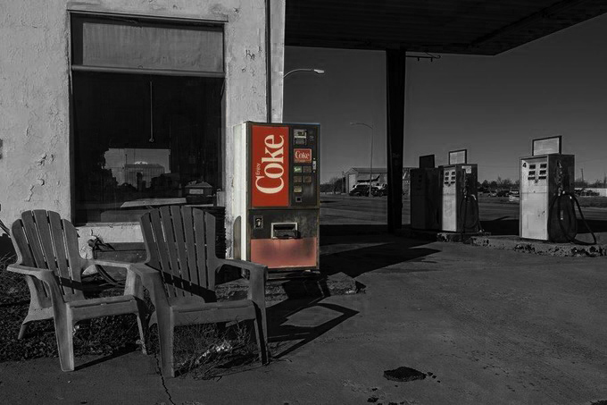
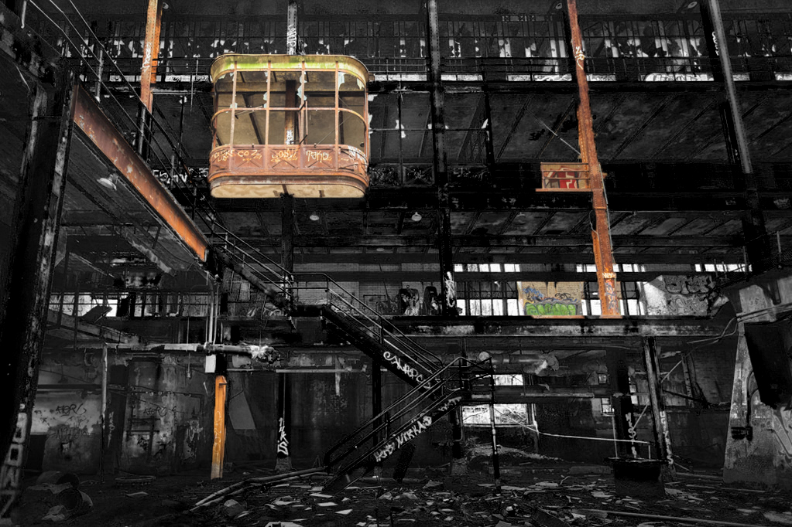
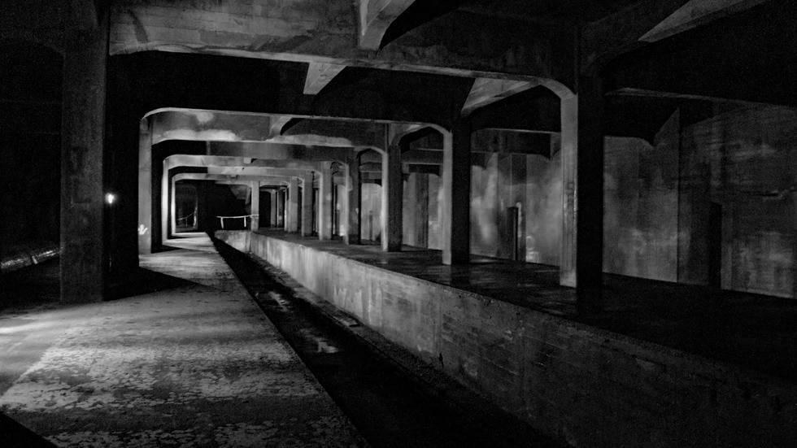
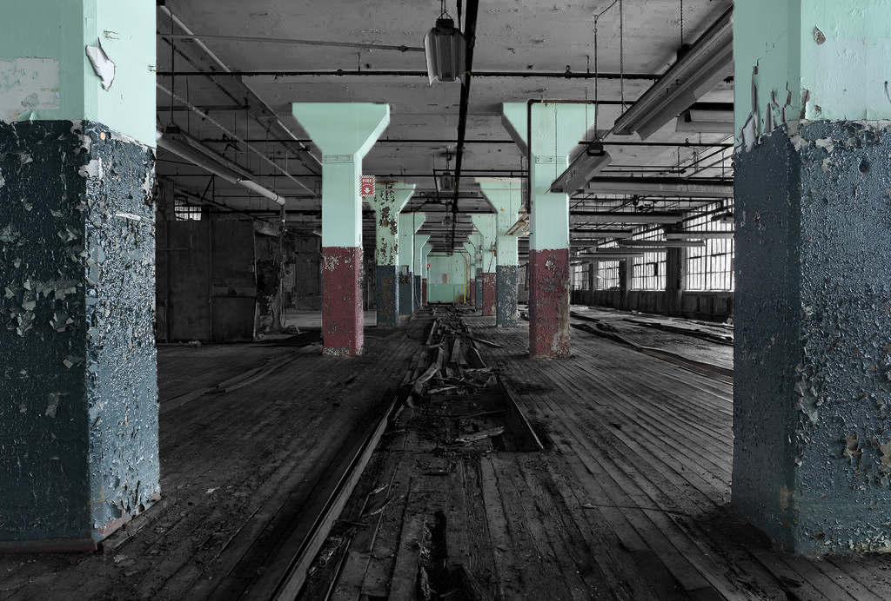
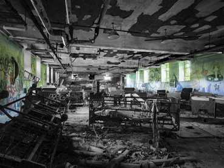
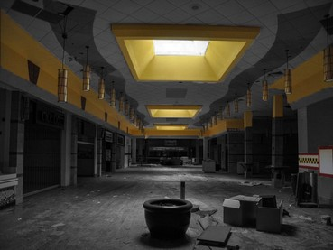
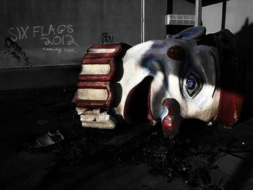
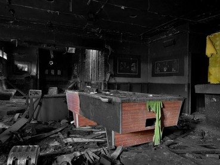
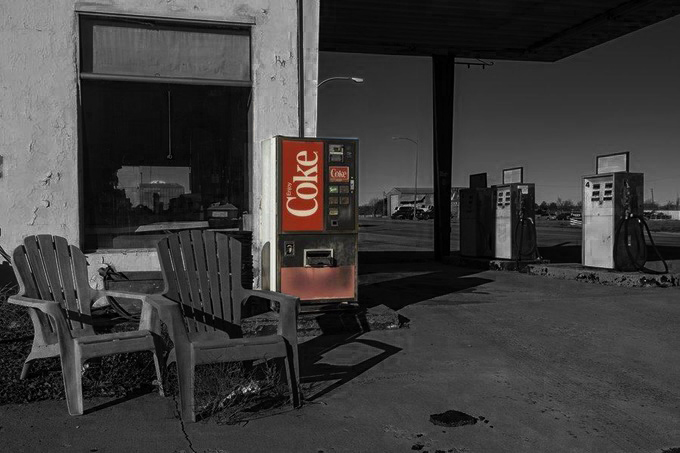
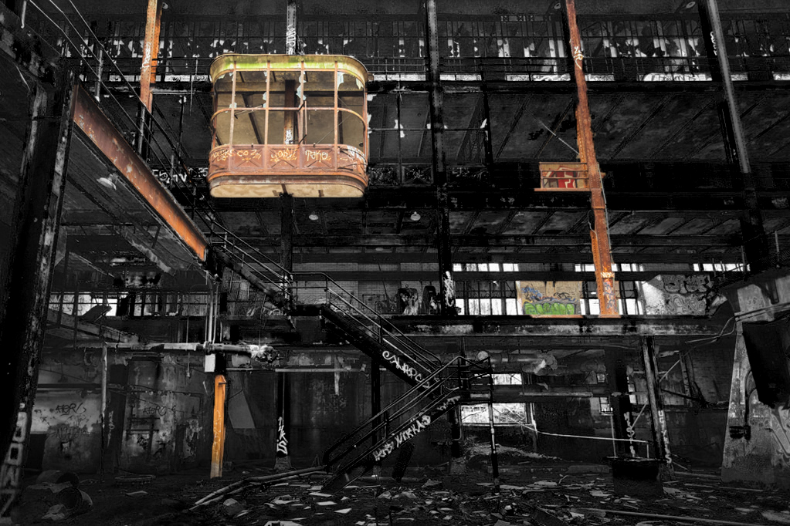
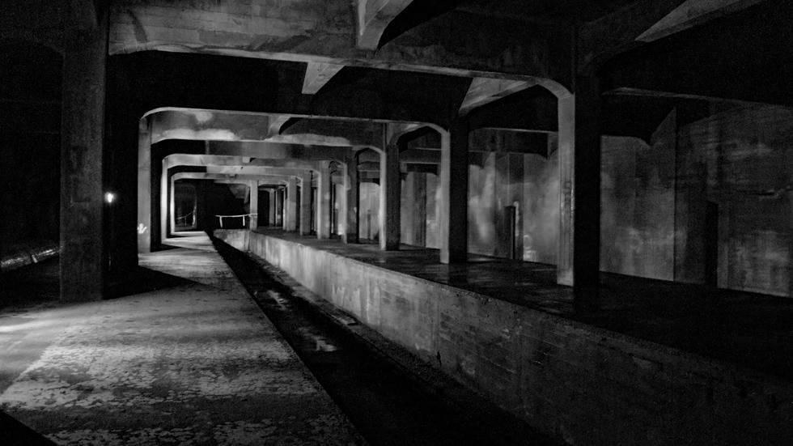
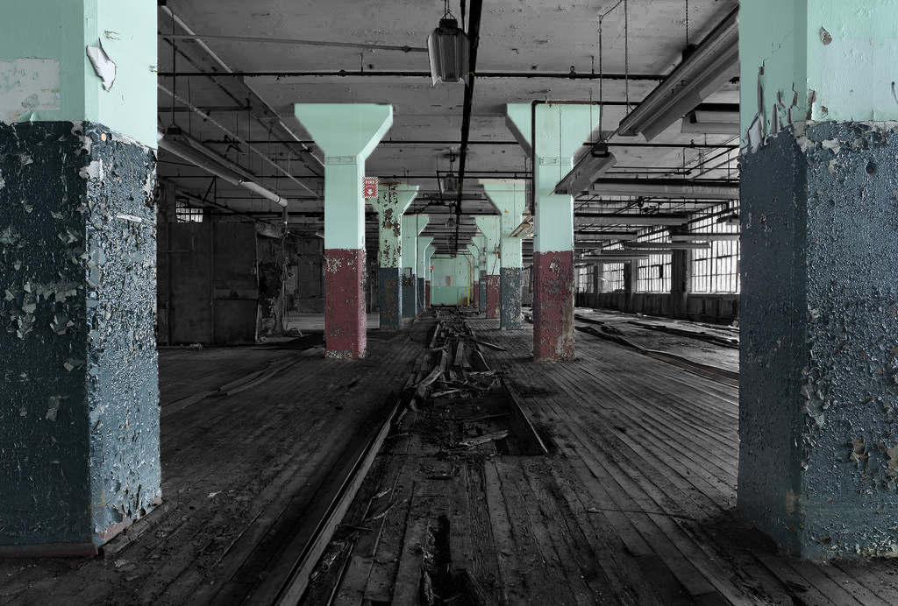
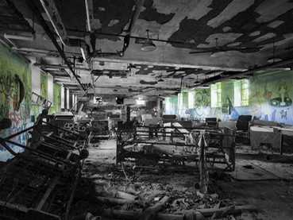
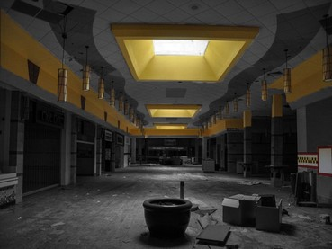
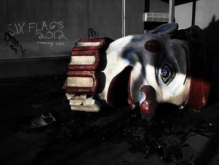
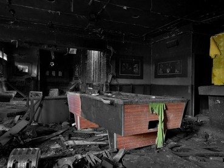
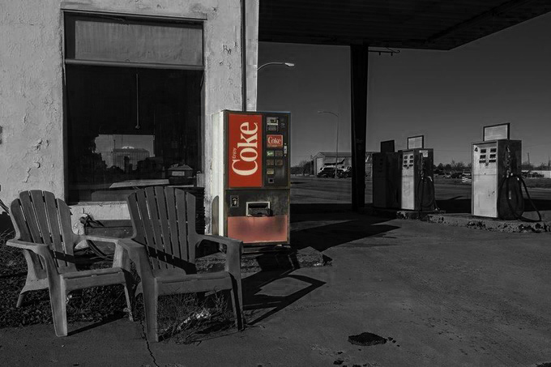
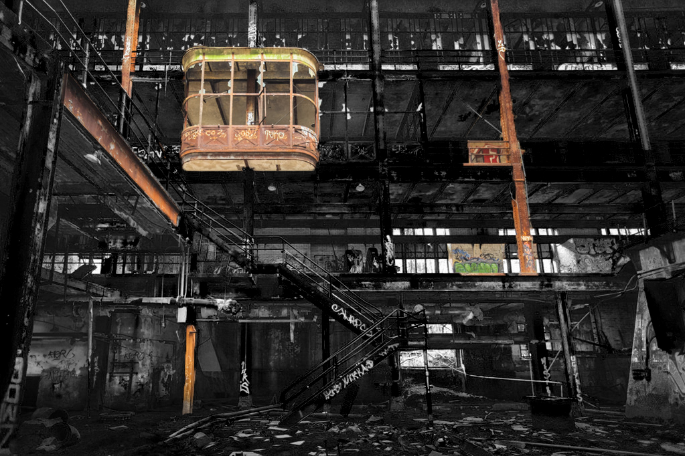
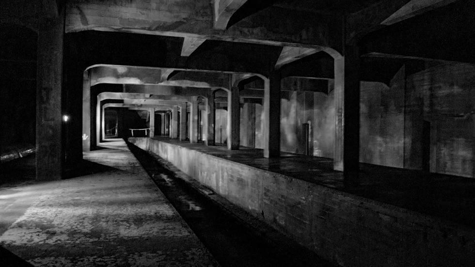
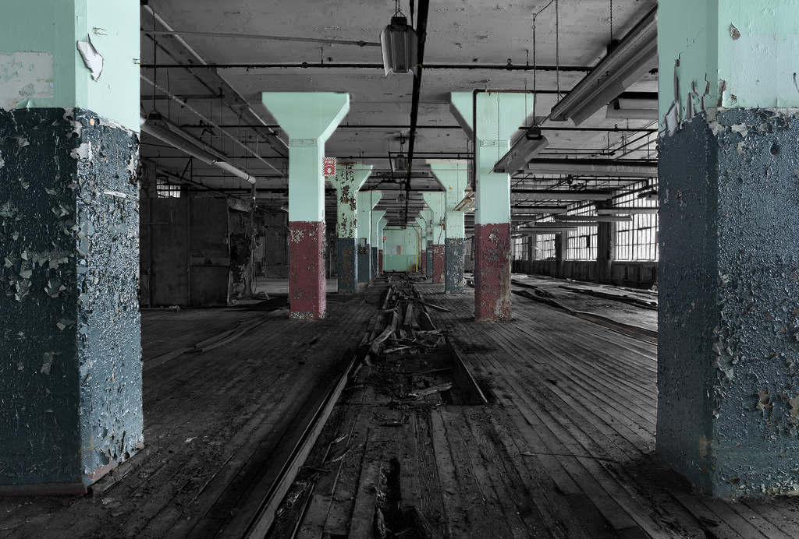
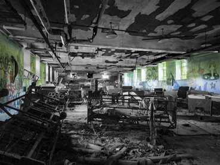
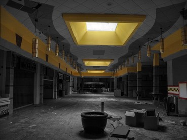
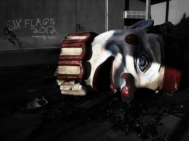
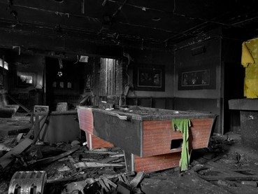
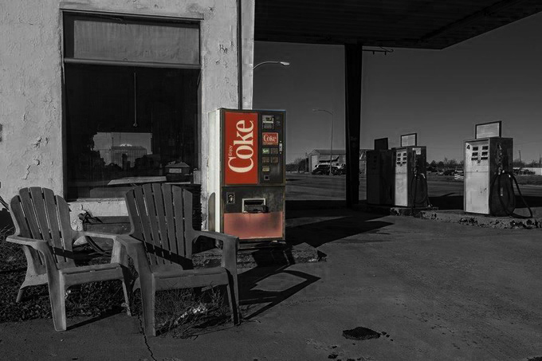
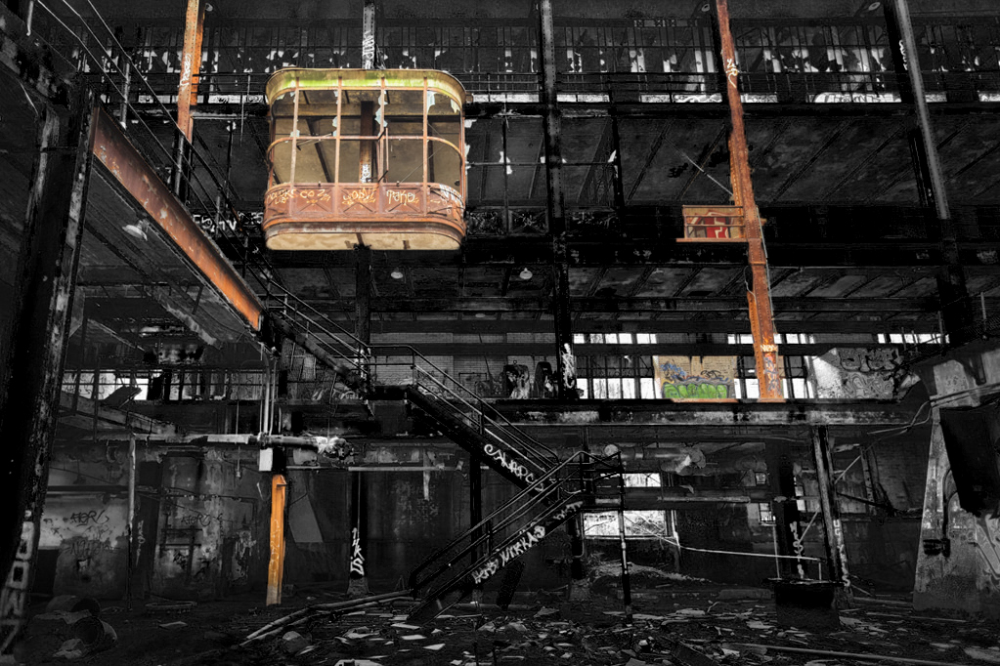
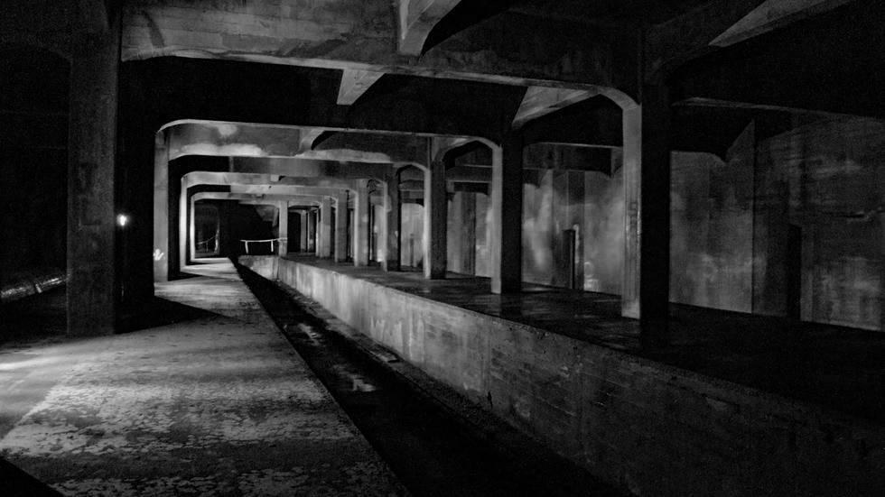
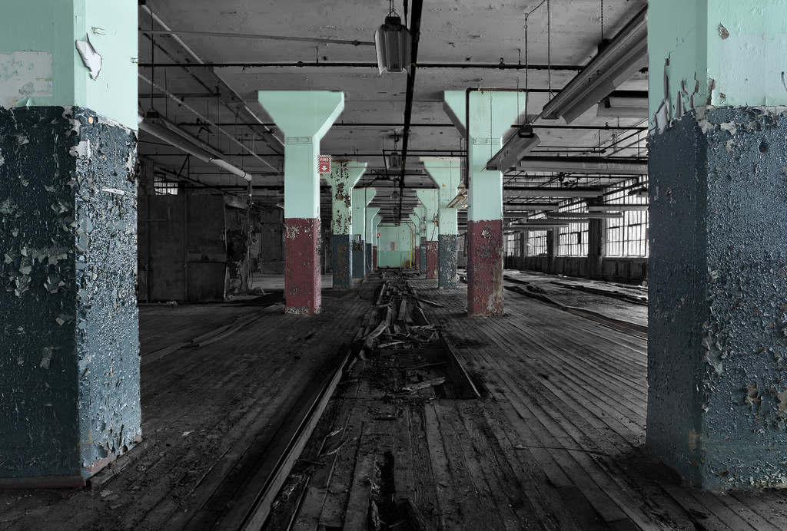
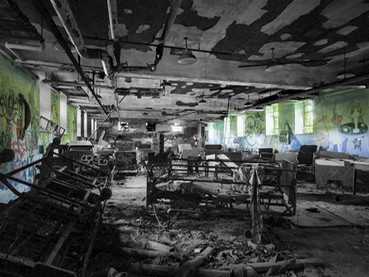
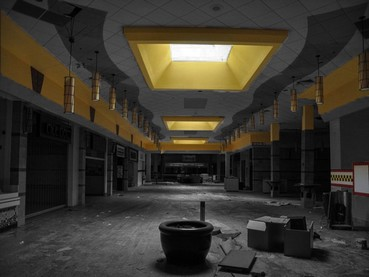
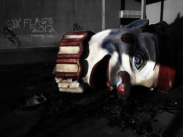
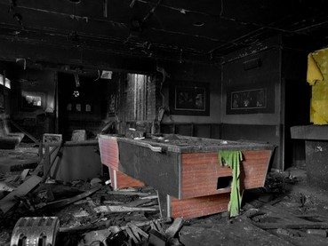
Baroudeur émérite, il est à l'affût de tous les lieux maudits du Nouveau-mexique. Esprit affûté et observateur, il a sû qui j'étais avant même de me présenter...
Enigmatique personnage que ce Bryan...Semble connaître les passages inconnus menant vers de nouveaux espaces jusqu'alors inexplorés. Jongle toujours avec une étrange pièce, forgée d'une matière n'existant pas sur cette terre...
Cette vielle femme est sans doute la personne la plus dangereuse que j'ai pu rencontrer sur ce continent... A essayé de m'amadouer afin de pactiser avec un démon mineur résidant dans ce vieux diner poisseux... Possède cette même étrange pièce que ce Bryan...